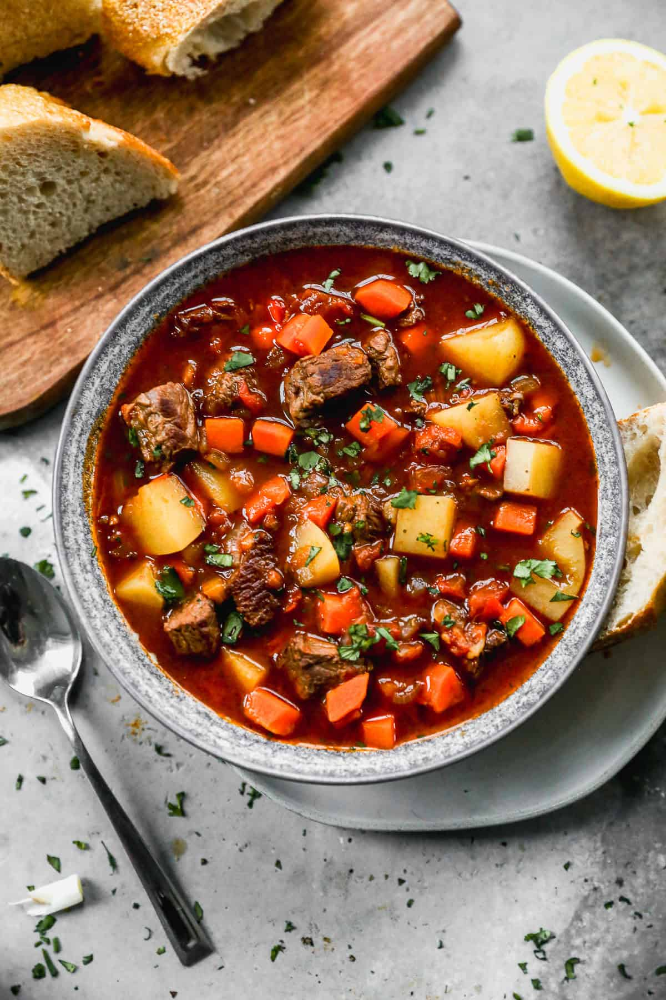

->Goulash
A delicious recipe for traditional goulash soup.
Ingredients
- 1 lb ground beef
- 1 onion, chopped
- 2 cloves garlic, minced
- 1 can (15 oz) tomato sauce
- 2 cups beef broth
- 2 cups elbow macaroni
- Salt and pepper to taste

Instructions
- In a large pot, brown the ground beef over medium heat.
- Add the chopped onion and minced garlic, and sauté until the onion is translucent.
- Stir in the tomato sauce and beef broth, and bring to a simmer.
- Add the elbow macaroni, and cook until tender, about 10-12 minutes.
- Season with salt and pepper to taste.
Enjoy your meal!
Back to Main Page